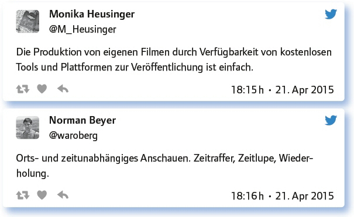
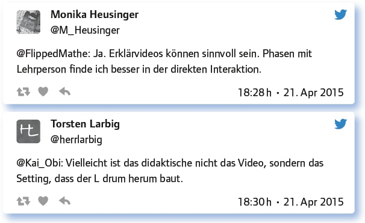

von Alicia Bankhofer
In diesem #EDchatDE wurde das spannende Thema des Videos im Unterricht behandelt. Die Nutzung von Filmen im Unterricht ist keine Neuerscheinung im digitalen Zeitalter. Videomaterial wurde schon seit Jahrzehnten in Klassen zu Anschauungszwecken verwendet. Was die Technik dennoch heutzutage bietet, ist die Möglichkeit, auf unkomplizierte Weise kostengünstig Videos selbst zu produzieren und zu verbreiten sowie Zugang zu Millionen von Lernvideos zu bekommen. Und das seitens der Lehrpersonen UND Schüler. Nur, wie geht man als Lehrer am besten vor? Wie können Videos sinnvoll zur Unterstützung des Lernprozesses eingesetzt werden?
Filme? Zeigen manche Lehrer oft im Unterricht. Sind sie zu faul oder (wann) haben Filme didaktischen Mehrwert?
Zunächst ging es um die didaktischen Vorteile von Filmen im Unterricht. Die Frage ist, ob Filmschauen nur eine faule Alternative für Lehrkräfte ist. Dies wurde eindeutig verneint, und es wurden einige Vorteile von Filmen benannt.
… sinnvoll, wenn sie zielführend für das Thema sind und für Schüler verständlich.
Einige sicherlich! Einen Mehrwert haben Videos dann, wenn sie didaktisch reduziert, auf den Punkt gebracht und nicht zu lang sind.
Didaktischer Mehrwert? Unbedingt! Der liegt in der Visualisierung, Aktivierung, Motivation, didaktischen Reduktion.
Videos sind als Learning-on-Demand-Ansatz natürlich sehr frontal, aber für einige reicht das. Der Flipped Classroom wäre ohne schwer.
Schüler sind mit Filmen oft eher zu motivieren.
Filme können einige sehr abstrakte Dinge (z. B. in Physik) wunderbar visualisieren und als Einstieg und Diskussionsanlass dienen. In Chemie sind sie auch gut, wenn man das Experiment nicht machen darf wegen der giftigen Chemikalien. Wie soll das sonst anschaulich gehen?
Frontalphasen als Video aufzeichnen und im Folgejahr zur Vorbereitung bereitstellen? Sinnvoll, schon gemacht?
Diese Frage wurde von den Teilgebern widersprüchlich beantwortet. Einerseits wird dies als sinnvoll erachtet und praktiziert, aber es gibt durchaus auch die Meinung, dass es nichts bringt, diese Filme in einer anderen Klasse zu zeigen. Dafür werden unterschiedliche Gründe benannt.
Das mache ich im aktuellen Schuljahr: Powerpointpräsentation daheim aufnehmen und auf http://t.co/myzj0wTUjMbereitstellen.
Das klingt gut. Aber man muss die rechtliche Seite beachten, wenn Schüler gefilmt werden.
Aber die Klasse ist nächstes Jahr doch eine andere! Ich halte Videos von Frontalphasen für Lehrzwecke didaktisch wenig sinnvoll.
Verfilmter Unterricht wird leicht langweilig. Filme müssen viel dichter sein und Inhalte zusammenfassen.
Wir hatten das an der Uni bei einigen Vorlesungen … Der Vorteil: Man konnte die Sprechgeschwindigkeit erhöhen.
Es gibt genug OER-Material da draußen, das man verwenden kann. Genug auf diversen Plattformen, auch Videos.
Lernvideos zu Theorien/kurzen Sachverhalten sind sinnvoll, für größere Zusammenhänge sind sie in meinen Fächern schwierig.
Welche neuen Möglichkeiten beim Umgang mit verfügbaren Lehr-/Lernvideos in der Bildung bietet die Digitalisierung?
Hier wurden unterschiedliche Aspekte genannt, wie z. B., dass die Erstellung von Videos einfacher ist, und sie orts- und zeitunabhängig angeschaut werden können.

Vom Konsum zur Produktion: In welchen Zusammenhängen ist es sinnvoll, Schüler Videos drehen zu lassen?
Neben der Kreativität, die bei der Erstellung von Videos erforderlich ist, wurde betont, dass sich die Schüler so sehr intensiv mit den Inhalten auseinandersetzen. Videos können in unterschiedlichen Bereichen sinnvoll gedreht werden. Von den Teilgebern wurden einige Beispiele aufgezeigt:
Zur kreativen Auseinandersetzung mit Lerninhalten.
Wenn die Schüler selbst Videos erstellen, beschäftigen sie sich sehr intensiv mit dem Inhalt, oft in mehrerlei Hinsicht.
Visualisierung von Literatur, Selbstreflexion von Präsentationen, Speaking Practice, etc., etc.
„Erklärvideos“ selbst drehen, Interviews machen, Versuchsabläufe filmen, Legevideos erstellen, Rollenspiele aufzeichnen.
Eventuell am Ende einer Unterrichtseinheit, um nochmals das Wichtigste zusammenzufassen
Im Deutschunterricht: Mit Sofatutor einsteigen, dann selbst ein Video zu einer literaturgeschichtlichen Epoche drehen.
Produktionsorientiertes Arbeiten im Musikunterricht, Reihe Filmmusik oder Reihe Musik in der Werbung. Das ist Schüleraktivierend!
Ich liebe es in Sprachübungen. Schüler nehmen sich gegenseitig bei Dialogen auf. Dann analysieren sie Dialoge von anderen.
Nun sollten sich die Teilgeber gegenseitig kommentieren.
Antworte auf 3 Tweets unterschiedlicher Teilgeberinnen a) zustimmend, b) kritisch, c) provozierend!

Deine Lieblingsvideos zum Lehren/Lernen? Gerne mit Link! Gerne mit kurzer Begründung.
The videos of the mathematics-MOOC of @dunkelmunkel et al. I do not like math, but this videos: https://t.co/iJ1qBZHjgJ
Der Dorffuchs hat tolle Mathe-Ohrwürmer. Die Formeln summen die SuS auch 5 h später vor sich hin: http://t.co/hmZyqdZVJN
Hilberts Hotel: https://t.co/AIsHBTZEKl.Meinjetzt10-jähriger Enkel kennt das Video noch zwei Jahre danach auswendig!
Via @captivate have a look one video I made to explain and one is interactive for practice: http://t.co/DOJcdJweSz
Noch einmal der Hinweis auf die Videos von @oncampusfhl: https://t.co/g8Bl3olF6v inklusive vieler MOOC-Videos unter OER-Lizenz.
The marshmallow test/experiment: kids battling desire: https://t.co/5VwrA57cL3
Ich mag das Video von @joeranDE zu #OER: https://t.co/wbiCZencmD
Von einem aktuell erfolgreichen Rap-Produzenten Reimschemata und sprachliche Mittel erklären lassen: http://t.co/1BGMTaQiYX
Video zur Herleitung des Kugelvolumens: https://t.co/pZ9O7sDFB6 Gründe: kurzweilig, auf den Punkt, Video im Video.
Immer noch geniales, dichtes Video von Jörn Loviscach: Herausforderungen, Werkzeuge, Erfahrungen: https://t.co/31gI85276W
Videos von Lernvideos und Vorträgen, Beispiel zur Französischen Revolution: https://t.co/Fnc9okVwSf
Soll ich als Lehrer selbst Videos produzieren? Wenn ja: Worauf muss ich achten? Tools? Tipps?
Hierzu gaben die Teilgeber einige Anregungen.
Gerne! Nutze einfach dein Smartphone. Achte auf Persönlichkeitsrechte/Urheberrecht und stelle sie, wenn möglich, unter CC-Lizenz.
Zeiten beachten. Sie sollten nicht länger als 10 Minuten dauern. Perfektionismus bringt es nicht! Dann würde es zu lange dauern.
Office Mix als PowerPoint Add-In, um Film-/Quiz-/ Präsentationen / … zu erstellen.
Ja. Aber sich erst mit den Programmen vertraut machen und dann selber Videos einstellen. Ausreichend Zeitpuffer einplanen.
Screencasts mit Screencast-o-matic ist einfach und das ist auch Video. Kann jede(r). Mehr traue ich mich nicht.
Keep it short and simple. Ansonsten ausprobieren und vor allem: anfangen.
Wir machen die meisten Screencasts mit Camtasia. Aber auch ExplainEverything ist super.
Notwendige Tools sind: gutes Mikrofon, Screencastsoftware (ich verwende Bandicam), Powerpoint, WindowsMovieMaker für Schnitt.
Tipps: Möglichst in einem Durchgang aufnehmen, da es „echter“ ist und nicht so viel Zeit fürs Schneiden draufgeht.
Welche Anregungen, Fragen hast du sonst noch zum Thema?
Fazit:
Der Einsatz von Videos zur Unterstützung des Lernens nimmt dank immer besser werdender Angebote von Plattformen und Tools konstant zu. Neben zahlreichen Quellen für Lern- videos die unter OER frei und kostenlos zur Verfügung stehen, gaben die #EDchatDE-Teil- nehmenden wertvolle Erfahrungen und Empfehlungen für die Eigenproduktion sowie didaktische Vorgehensweise weiter – ein tolles Ergebnis dieser aktiven Twitter-Community.
Weiterführende Links:
Birte Svea Philippi: Erklärvideos selbst erstellen: Techniken, Planung und Umsetzung: www.e-teaching.org/community/communityevents/schulung/erklaervideos-selbst-erstellen-techniken-planung-und-erstellung-training
sofatutor-Magazin: Ist das Lernen mit Videos effektiv? – Ja, sagen Wissenschaftler: http://magazin.sofatutor.com/schueler/2014/01/29/ist-lernen-mit-videos-effektiv-ja-sagen-wissenschaftler/
Link zum vollständigen Protokoll: